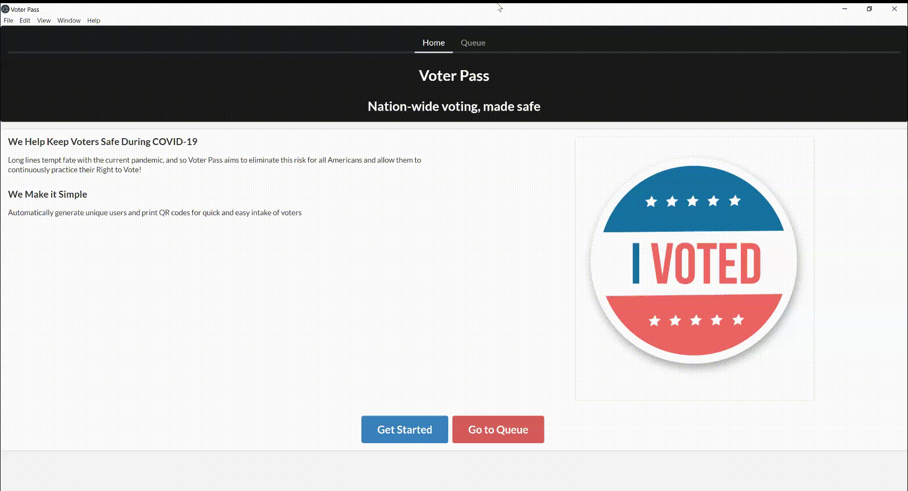
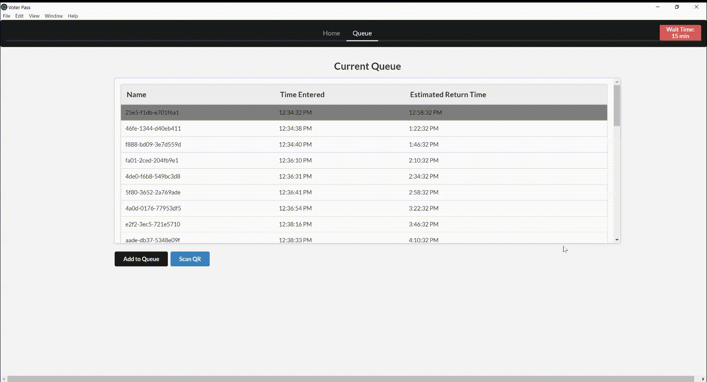

There are two ways to access the Queue page: through the button found on the home page, or the tab labelled "Queue" in the top navigation bar
To update the Estimated Wait Time, simply go to the Queue, and click on the red icon in the upper-right hand corner. Input the desired time, and click "Submit"
You can add a voter simply by clicking the "Add Voter" button on the Queue page, below the list of current voters.
Choose a voter, and press "Print QR code" to connect to the desired printer and print the code.
Once a voter approaches, click the "Scan Code" tab and have the user place the code within the camera' frame. Click "Take Picture" when ready, and it will confirm whether the user is valid and on time or not.
